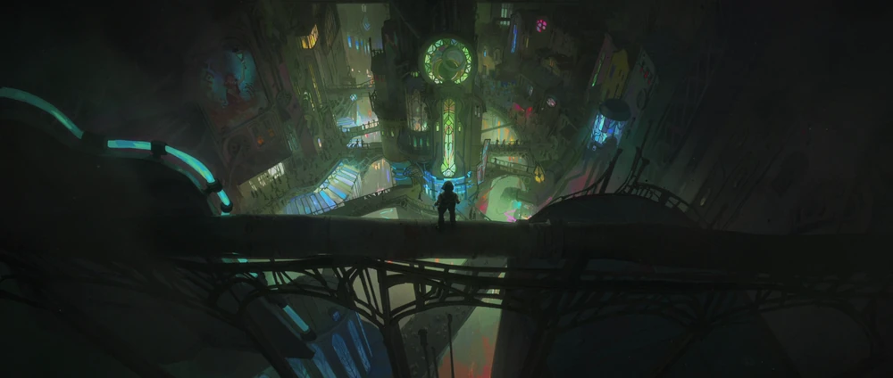

Orașul Umbrelor
Zaun este un oraș subteran, aflat sub metropola strălucitoare Piltover, un loc al supraviețuirii brutale și al creativității neîmblânzite. Spre deosebire de eleganța și prosperitatea Piltover-ului, Zaun este un labirint de fabrici industriale, conducte ruginite și cartiere dense, unde poluarea și pericolele chimice domină viața cotidiană. În ciuda condițiilor grele, Zaun este un focar de inovație, dar și un simbol al inegalității și al revoltei sociale.
Locuitorii Zaun-ului sunt inventivi și rezilienți, adaptându-se la un mediu ostil. Aici, tehnologia avansată coexistă cu experimente periculoase, deseori alimentate de substanța Shimmer, o creație chimică ce oferă puteri supraomenești, dar care are efecte devastatoare. În timp ce unii văd în Shimmer o cale de a supraviețui, alții o consideră o armă a distrugerii.
Atmosfera din Zaun este întunecată, dominată de lumini verzi și violete strălucind prin ceața toxică. Canalele și tunelurile subterane sunt pline de viață, iar piețele improvizate vând de toate – de la piese mecanice rare până la substanțe experimentale. Deși este un loc periculos, Zaun are o energie unică, alimentată de speranța locuitorilor săi că pot transforma realitatea lor sumbră.
Tensiunile dintre Zaun și Piltover sunt constante, alimentate de inegalitatea socială și de exploatarea locuitorilor Zaun-ului. Mulți dintre ei văd Piltover ca pe o forță opresivă, care beneficiază de pe urma muncii lor și îi împinge tot mai adânc în umbră.
Zaun este mai mult decât un oraș al suferinței – este un simbol al supraviețuirii, al ingeniozității și al dorinței de libertate. Locuitorii săi trăiesc pe muchie de cuțit, dar spiritul lor rebel și creativ îi face să fie o forță de temut în lumea Arcane.
